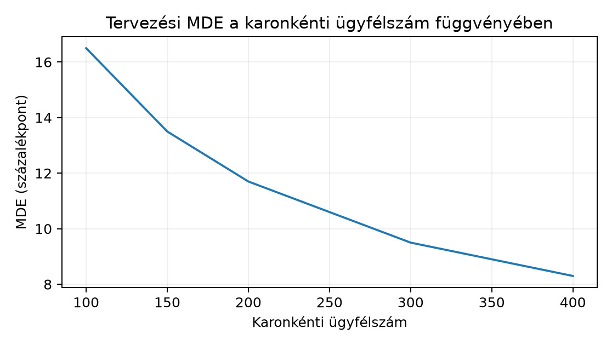

Belépő · szint: haladó · idő: 90 perc · eszköz: SciPy, statsmodels
Előfeltétel: 39.4. alfejezet · Célkészség: Kísérleti kérdés és előzetes elemzési terv · Kimenet: projektartefaktum és ellenőrzött futtatási jegyzőkönyv.
A Northstar-labortól függetlenül létezik egy külön, mesterséges
kísérleti folyamat: 2025-07-01-én 300 ügyfelet randomizáltak
control vagy treatment karba, majd ugyanazon
rögzített hétnapos ablakban figyelték meg őket. A kezelés egy egyszeri
aktivációs protokoll (például új üdvözlő üzenet), amelynek célja a
hétnapos konverzió növelése.
| Fájl | Megfigyelési egység | Kulcsszerepű mezők | Alapsor |
|---|---|---|---|
assignments.csv |
ügyfél | customer_id, variant,
assigned_at |
300 |
outcomes.csv |
ügyfél | conversion_7d, revenue_7d_minor,
observed_until |
300 |
A feladat most nem a becslés, hanem az előzetes
elemzési terv (confirmatory plan) rögzítése, mielőtt a hatásmutatókat
kiszámítanánk. A bemenet a két CSV és a manifest.json
hash-rögzítése; a kimenet egy verziózott tervlap, amely megadja az
elemzési egységet, az ITT-nevezőt, az endpointot, a becslőt, a
guardrail-küszöböt és az MDE-t. Az ellenőrzési feltétel: a tervlap
minden számítása tételesen visszavezethető a befagyasztott fájlokra, és
a 40.2. alfejezet elemzés e tervtől eltérés
nélkül fut.
Induló feladat a magyarázat előtt. Tervezési feltevés: a kontrollkari konverzió nagyjából , a remélt abszolút hatás , karonként ügyfél. Írd fel és számold ki az MDE-t 80% erőhöz, kétoldalas szinten. (A levezetés a fogalmi részben következik; próbáld a korábbi 16.4. alfejezet power-képletéből visszafejteni.)
A randomizálási egység (randomization unit) itt az
ügyfél: az assignments.csv minden sora egyetlen
customer_id-hez rendel egy karjelölést, a
variant értéke kizárólag control vagy
treatment. A hozzárendelés
(assignment) maga a
változó:
,
ha az
.
ügyfél a treatment karba került, különben 0. A megfigyelési egység
ugyancsak az ügyfél: az outcomes.csv egy sora egy ügyfél
kimenetét tartalmazza. Ennek betartása kritikus, mert a rendelés- vagy
tételszintű sorok összemásolása megsokszorozná a nevezőt, és a
függetlenségi feltevést is megsértené.
Az ITT (intention-to-treat, szándék szerinti kezelés) elve szerint a nevezőbe minden randomizált ügyfél beletartozik, függetlenül attól, hogy a kezelést ténylegesen megkapta-e, konvertált-e, vagy bármilyen protokollt megszegett. Ha az halmaz a 300 randomizált ügyfél, akkor a célparaméter
ahol a hétnapos konverzió indikátora. A jelölés a randomizálás által létrehozott feltételes valószínűséget jelenti, nem egy külső megfigyelési folyamatból való becslést. Ha valaki kihagyná a nem konvertáló ügyfeleket vagy csak a kezelést „szabályosan” megkapókat elemezné, az as-treated vagy per-protocol elemzéshez jutna, amely szelekciós torzítást vihet be – ez már nem az ITT.
A kizárás (exclusion) szabálya ezért szigorú:
elemzésből csak randomizálás előtti okból lehet ügyfelet kivenni, és azt
is dokumentálni kell. A Northstar-táblában nincs ilyen: a tervlap
kimondja, hogy „post-randomization kizárás: nincs; ha egy
customer_id hiányzik az outcomes táblából, az
protokolleltérés, amelyet jelenteni kell, és a hiányzó kimenetet nem
szabad automatikusan sem kizárni, sem nullának tekinteni. A főelemzéshez
előzetesen rögzített hiányadat-stratégia szükséges; a teljes randomizált
populáció az ITT-célpopuláció marad, míg a megfigyelt esetekre számolt
arány csak részleges elemzés. Kötelező érzékenységi elemzés több,
indokolt hiányadat-feltevéssel.”
A primer endpoint a conversion_7d
bináris oszlop. Az ablak fix: minden ügyfélre
.
A laborban assigned_at = 2025-07-01T00:00:00+00:00 és
observed_until = 2025-07-08T00:00:00+00:00 minden sorban,
tehát a követési idő azonos. Az ellenőrzés része a tervnek: az
egyesített táblában assigned_at és
observed_until is konstans kell legyen. Ha ez nem teljesül,
az endpoint definíciója sérül, és a terv „REVIEW” állapotba kerül.
A guardrail (védőkorlát) a
revenue_7d_minor egy ügyfélre jutó átlaga. Mértékegysége
EUR-cent, ezért a különbségek is minor egységben érvényesek. A
bevezetési döntéshez a konverziós előny mellett azt kell igazolni, hogy
az átlagos bevétel nem omlik össze. A terv előre rögzített küszöböt
használ:
minor egység, azaz 5,00 EUR ügyfelenként. A guardrail-célparaméter
itt egysége cent, egysége cent/ügyfél. A teljesítési feltétel nem egyszerűen , mert a becslés zajos: a terv az egyoldalas 95%-os alsó konfidenciahatárt hasonlítja a értékhez. Csak akkor megy át a kapu, ha az alsó határ minor egység fölé esik. Így kis mintán egy pozitív pontbecslés mellett is „guardrail nem megerősített” lehet a kimenet, ami helyes konzervatív döntés.
Az MDE (minimum detectable effect, minimálisan kimutatható hatás) azt a legkisebb valódi abszolút hatást adja meg, amelyet a design adott erővel, előre rögzített tévedési szint mellett jellemzően kimutat. A 16.4. alfejezetben megismert power-gondolatból indulunk ki: kétoldalas, kétmintás aránytesztnél a standardizált hatás a nullhipotézis alatt közelítőleg normális eloszlást követ; a detektáláshoz a z-statisztika abszolút értékének meg kell haladnia -t.
Jelölések: a karok elemszáma (tervezéskor ), a kontrollkari tervezési arány, a feltételezett treatment-arány, a standard normális eloszlás kvantilise, a kétoldalas elsőfajú hibaszint, a célzott erő. A hatáskülönbség standard hibája az alternatíva alatt
A detektálhatósági egyenletből
Minden arány dimenzió nélküli, az is arányskálán van; százalékpontban úgy közöljük, hogy 100-zal szorozzuk.
Kézi számpélda: , , tehát ; , ; , .
A fenti, rögzített 28%-os alternatív arányból számolt közelítő detektálhatósági skála 13,5 százalékpont; ez azonban nem önkonzisztensen megoldott MDE, mert a varianciaképletben 10 százalékpontos hatás szerepel. A tényleges, 80%-os erőhöz tartozó minimális hatást a próbaváltozathoz illő erőfüggvény numerikus megoldásával kell meghatározni. A remélt 10 százalékpontos hatáshoz ugyanezen -tal a nemcentralitási paraméter , a hozzá tartozó erő , összhangban a 16.4. alfejezetbeli tervezési számmal. Ez fontos mondat a tervben: a vizsgálat a 10 százalékpontos hatásra alulerős, ezért a nem szignifikáns eredmény nem egyenértékűségi bizonyíték.
A következő ábra a tervezési MDE-t mutatja a karonkénti elemszám függvényében, ugyanezen , , , feltevések mellett. A pontok a fenti képletből számított értékek, nem mért kimenetek:

A görbe alakja a csökkenés: négyszeres minta felezi a kimutatható hatást. A tervlapban az MDE rögzítése a priori döntés; az adatok megtekintése utáni „megfigyelt erő” kiszámítása redundáns, mert a megfigyelt hatásból visszaszámolt erő monoton kapcsolatban áll a p-értékkel, és téves nagyságérzetet ad.
A megerősítő elemzési terv (confirmatory analysis plan) a következő tíz pontot rögzíti a futás előtt:
NORTHSTAR-EXP-2025-07, a két CSV manifest-hashével; eltérő
hash esetén a futás INVALID_DATA állapotot ad.conversion_7d,
rögzített 7 napos ablak, az observed_until konstans
ellenőrzésével.segment-re igazított logisztikus regresszió (statsmodels
opcionálisan) másodlagos; alcsoport-összehasonlítás feltáró,
Bonferroni-korrekcióval; minden tervtől való eltérés módosításként,
dátummal dokumentált.A tíz pont önmagában még nem preregisztráció; a tervet a
kimenetek megnyitása előtt rögzíteni kell. A
analysis_plan.json tartalmazza:
| Mező | Példa | Miért kell |
|---|---|---|
plan_version |
"1.0" |
a terv azonosítása |
created_at_utc |
"2025-07-02T08:00:00Z" |
a zárolás időpontja |
design |
300 ügyfél, 150/150, 7 nap | a design rögzítése |
estimand |
ITT aránykülönbség | a célparaméter |
endpoint |
conversion_7d |
a primer végpont |
exclusions |
nincs post-randomization | a nevező védelme |
missing_strategy |
teljes randomizált populáció + érzékenység | a hiány kezelése |
test |
kétoldalas z-teszt, α=0,05 | a teszt |
practical_threshold |
5 százalékpont | a döntési küszöb |
mde |
13,5 százalékpont (közelítő) | a tervezési érzékenység |
data_freeze |
a két CSV SHA-256 | az adatverzió |
A terv kanonikus JSON-jának SHA-256 hash-ét a kimenetek
megnyitása előtt rögzítjük: Git commitban, aláírt tagben vagy a
CI naplójában. A created_at_utc és a hash együtt
bizonyítja, hogy a terv nem utólag készült. A kimenetek
(outcomes.csv) hash-e a zárolás után kerülhet a
data_freeze mezőbe; a terv hash-e ekkor már nem
változhat.
import hashlib
import json
def plan_hash(plan):
payload = json.dumps(plan, sort_keys=True, separators=(",", ":"))
return hashlib.sha256(payload.encode("utf-8")).hexdigest()
def lock_plan(plan, path):
digest = plan_hash(plan)
path.write_text(json.dumps({"plan": plan, "plan_sha256": digest},
indent=2), encoding="utf-8")
return digest
def verify_plan(locked, expected_hash):
if locked["plan_sha256"] != expected_hash:
raise RuntimeError("a terv hash-e nem egyezik a zárolt értékkel")
return locked["plan"]A módosítás (amendment) új
plan_version-t és új hash-t kap, az okot és a dátumot
rögzíteni kell, és az eredeti terv szerinti elemzést is le kell
futtatni. Az elemzőkód a PLAN_SHA256 konstansot ellenőrzi,
mielőtt bármilyen kimenetet beolvasna; a
tests/test_preregistration.py a hash stabilitását, a
zárolás utáni adatváltozás hatását és a hibás tervhash elutasítását
teszteli.
A példát két lépcsőben mutatom. Először egy 8 fős kézi
kontrolltáblával ellenőrizzük a számolást, majd a laborfájlokat
feldolgozó futtatható blokk következik. Platform: Python 3.12,
projektgyökér northstar/, adatok a lab/ alatt,
függőségek a lab/pyproject.toml tartományaiból. A
generálási módban a nagy blokk nem futott, ezért a laborfájlokra
vonatkozó nyomtatást szemléltetőnek jelölöm; a 8 fős rész számtani
ellenőrzése kézzel elvégzett.
Kézi kontrolltábla:
| customer_id | variant | conversion_7d | revenue_7d_minor |
|---|---|---|---|
| c01 | control | 1 | 2400 |
| c02 | control | 0 | 0 |
| c03 | control | 0 | 0 |
| c04 | control | 1 | 3100 |
| c05 | treatment | 1 | 1800 |
| c06 | treatment | 1 | 2600 |
| c07 | treatment | 0 | 0 |
| c08 | treatment | 1 | 2900 |
Kézi számítás: , , tehát (25 százalékpont). A Wald-SE:
A 95%-os CI: , azaz arányskálán. A bevétel: kontrollátlag , kezelési átlag , különbség 450 minor. A kontroll szórásnégyzete 2 602 500, a treatmenté 1 695 833 minor², így a Welch-SE minor, az egyoldalas alsó határ minor. A -as küszöbbel szemben a kapu nem teljesül: nyolc ügyfélen a pozitív pontbecslés ellenére a minta túl kicsi. Ez a kapu logikája, nem hiba.
A laboradatokra írt ellenőrzött munkamenet:
import numpy as np
from scipy.stats import norm
# Munkakönyvtár: northstar/ ; adatfájlok a lab/ alatt.
assign = pd.read_csv("lab/data/assignments.csv")
outcome = pd.read_csv("lab/data/outcomes.csv")
# Egy-az-egyhez egyesítés; duplikátum vagy hiány esetén hiba, ez szerződésellenőrzés.
df = assign.merge(outcome, on="customer_id", how="inner", validate="one_to_one")
# Szerződés-invariánsok, nem statisztikai tesztek.
assert df["customer_id"].nunique() == 300
assert set(df["variant"]) == {"control", "treatment"}
assert df["assigned_at"].nunique() == 1
assert df["observed_until"].nunique() == 1
y = df["conversion_7d"].to_numpy(dtype=float) # shape: (300,), értékek 0/1
w = (df["variant"] == "treatment").to_numpy(dtype=float) # shape: (300,), 0/1 indikátor
n_T = int(w.sum()); n_C = int((1 - w).sum())
assert n_T + n_C == 300
p_T = y[w == 1].mean()
p_C = y[w == 0].mean()
diff = p_T - p_C
se = np.sqrt(p_T * (1 - p_T) / n_T + p_C * (1 - p_C) / n_C)
z = diff / se
ci = diff + np.array([norm.ppf(0.025), norm.ppf(0.975)]) * se
p_value = 2 * (1 - norm.cdf(np.abs(z)))
# Guardrail: bevételkülönbség, Welch-SE, egyoldalas alsó korlát.
r = df["revenue_7d_minor"].to_numpy(dtype=float) # cent/ügyfél
r_T = r[w == 1].mean()
r_C = r[w == 0].mean()
g = r_T - r_C
se_g = np.sqrt(r[w == 1].var(ddof=1) / n_T + r[w == 0].var(ddof=1) / n_C)
lower_g = g - norm.ppf(0.95) * se_g
g0 = 500 # 5,00 EUR ügyfelenként
guardrail_pass = bool(lower_g > -g0)
# Szemléltető kimenet, nem a labormérés: a fenti blokk a befagyasztott
# adatokból számol, az értékek setuponként az itteni futásnak megfelelnek.
print(f"n_T={n_T}, n_C={n_C}, p_T={p_T:.4f}, p_C={p_C:.4f}")
print(f"diff_pp={(diff*100):.2f}, CI_pp=[{(ci[0]*100):.2f}, {(ci[1]*100):.2f}], p={p_value:.4f}")
print(f"rev_diff_minor={g:.1f}, lower_95_minor={lower_g:.1f}, guardrail_pass={guardrail_pass}")A 8 fős kontrolltábla ugyanezen kóddal, beépített
DataFrame-ből számítható ki; az ott nyomtatott számoknak a
fenti kézi értékekkel
relatív tűrésen belül egyezniük kell.
Az értelmezésnek három rétege van. Szerződésréteg: a
validate="one_to_one" merge, a 300-as egyedi ügyfélszám és
a konstans időbélyegek azt garantálják, hogy az elemzési egység és az
endpoint-definíció nem sérült. Ha bármelyik assert eldob,
akkor nem statisztikai következtetési hibánk van, hanem
adatbefagyasztási hibánk – az elemzés megáll, a terv REVIEW
állapotba kerül.
Statisztikai réteg: a pontbecslés a mintából számolt aránykülönbség; a 95%-os CI gyakorisági értelmezése a sok ismételt mintavételre vonatkozik, nem arra, hogy a valódi hatás 95% valószínűséggel a konkrét intervallumban van (15.2. alfejezet, 15.4. alfejezet). A p-érték a nullmodell szerinti feltételes szélsőség, nem (16.1. alfejezet környéki konvenció folytatása). A z-statisztika normalitási közelítése a CLT-ből jön (14.4. alfejezet), és 150–300 fős karonkénti mintán, 0,18–0,28 körüli arányoknál elfogadható, de ezt a tervben kimondjuk, nem hallgatjuk el.
Döntési réteg: a 18.4. alfejezetben rögzített séma szerint a CI és a gyakorlati küszöb együttes értelmezése adja a bevezetés / további adat / elutasítás döntést. A guardrail-kapu ezen felül független felfüggesztési feltétel: ha a bevétel alsó határa minor alá esik, a döntés akkor is felfüggesztett, ha a konverziós CI felső határa kedvező. A 8 fős kontrollpélda éppen ezt mutatja: 25 százalékpontos pontbecslés mellett is „további adat” a tudományos válasz.
Értelmezés. A 8 fős kézi táblában c07 nem konvertált. Magyarázd el, miért marad a nevezőben, és mit torzítana, ha a kolléga „csak a konvertálókat” elemezné az ITT-helyett.
Megvalósítás. Írj egy függvényt
merge_assignments_outcomes(assign, outcome), amely
egy-egyhez egyesítést végez, és DesignError kivételt dob,
ha egy randomizált ügyfélhez nincs outcomes sor. Melyik join-típus
(how) fedi fel a hiányt, és miért nem elegendő a belső join
sorainak megszámlálása?
Hibadiagnózis. Egy kolléga a bevételi guardrail
ellenőrzésénél a revenue_7d_minor értékeket elosztotta
100-zal, hogy EUR-ban számoljon, de a küszöböt -500-on
hagyta. Mi a hiba mértéke és iránya? Add meg a javított küszöböt
EUR-skálán.
Megváltozott feltétel. A business a küszöböt minor egységre szigorítja. Mire változik a 8 fős példa kapudöntése, és milyen eljárási lépést kell a tervlapon megtenni, ha ez az adatok megtekintése után történik?
MDE-transzfer. Tegyük fel, hogy a következő félévben karonként 300 ügyféllel futtatják újra a kísérletet, változatlan , , , tervezési feltevésekkel. Számold ki az új MDE-t és a 10 százalékpontos hatáshoz tartozó erőt.
Tervfegyelem. Az adatok első megtekintése után a stakeholder azt kéri, hogy a primer endpoint konverzió helyett a bevétel legyen, mert „ott látszik igazán a hatás”. Miért sérti ez a megerősítő elemzési logikát, és mi a korrekt eljárás?
c07 a kezelt karhoz lett randomizálva; az ITT-nevező a randomizálás tényéhez kötődik, nem a kimenethez. A kimenet szerinti utólagos szűrés (post-treatment conditioning) szelekciós torzítást okoz: a kezelés hatására konvertáló ügyfelek rendszerszerűen bekerülnek, a kontrollban hasonló rejtett tulajdonságúak nem, így már nem a randomizálás kontrasztját méri. Ellenőrzés: a 8 fős példában a konvertálókra szűkítve , ami tévesen nulla hatást mutatna.
A how="left" join az assignments
oldalról megőriz minden randomizált ügyfelet; ha egy
customer_id-hez nincs outcomes sor, a céloszlopok
NaN-ek lesznek. Ekkor dobunk DesignError-t. A
belső join sorainak megszámlálása (300-e) nem elegendő, mert egy kiesett
ügyfél mellett egy máshonnan becsúszó duplikátum is 300 sort adhat; az
ITT-nevezőt az assignments sorai definiálják, ezért balról
kell indulni. Emellett a validate="one_to_many"
figyelmeztetne az outcomes oldali duplikátumra, a
one_to_one pedig rögtön hibát dob.
A kolléga a küszöböt minor skálán hagyta, miközben a bevételt EUR-ba váltotta: a küszöb így EUR-t jelentene, azaz százszorosan megengedő. A javított küszöb EUR-ban , mert minor EUR. A kapudöntés 8 fős példán nem változik, hiszen az alsó határ EUR alatt marad; de a hibás küszöbbel való összehasonlítás EUR-val tévesen megengedő döntést adhat nagyobb mintán is.
-es küszöbbel a 8 fős példában az alsó határ minor változatlanul a küszöb alatt marad, tehát a kapu továbbra sem teljesül. Az eljárási pont: ha a küszöbmódosítás az adatok láttán történik, az a megerősítő terv megsértése; a helyes út a tervlap verziózott módosítása (amendment), a módosítás okának és dátumának dokumentálásával, és annak kimondásával, hogy az eredeti, előre rögzített elemzés is lefut. Ha a módosítás túlzottan adatvezérelt, a következtetést feltáró jellegűvé kell minősíteni, és új független mintás megerősítésre van szükség.
mellett , tehát , vagyis 9,6 százalékpont (rögzített alternatívára számított közelítő skála, nem önkonzisztens MDE). A 10 százalékpontos hatáshoz a nemcentralitás , az erő , tehát körülbelül 83%. Ellenőrző invariant: a karonkénti négyszerezése 150-ről 300-ra az MDE-t -vel csökkenti: , egyezik.
Az endpoint adatpillantás utáni cseréje a confirmatory keretet rombolja: a tesztelésre kiválasztott mutató ekkor már a megfigyelt mintázathoz igazodik, ami felfújja az elsőfajú hibát, és a jelentés „megerősített” állítása nem lesz hiteles. A korrekt lépés: az eredeti terv szerinti elemzést lefuttatni és a konverziós eredményt megerősítőként közölni; a bevétel elemzését feltáró fejezetként hozzáadni, megjelölve, hogy ez post hoc nézet; ha a bevétel valóban primer döntési cél, akkor új, független kísérletet kell tervezni, amelyben már bevétel az előre rögzített endpoint.
A leggyakoribb tervhiba a követési idő utólagos összemosása:
az eltérő követési időt nem lehet azonos hétnapos endpointnak
nevezni. Ellenpélda: két ügyfél, A és B, mindkettőnél
observed_until = 2025-07-08, de A assigned_at
értéke 2025-07-01, B-é 2025-07-06. Ha a conversion_7d
mezőbe mindkettőnél 0 kerül, akkor A esetében ez valódi 7 napos nulla, B
esetében viszont csak 2 napnyi megfigyelés utáni nulla. Ha a bevezetés
későbbi hullámban érinti a kezelt kart, a kezelt ügyfelek
rendszerszerűen rövidebb ablakot kapnak, és a becsült kezelési hatás
lefelé torzul – nem a kezelés rossz, a mérés nem egyenlő. A
Northstar-szerződés ezt azzal zárja ki, hogy minden sornál azonos
assigned_at és azonos observed_until szerepel;
a tervben ezért ez nem díszítő assert, hanem
endpoint-definíciós ellenőrzés. Ha a valódi üzleti rendszer változó
követési időt produkálna, akkor cenzorált megfigyelési szerződésre és
túléléses elemzésre kellene váltani, ami a 36.1.
alfejezetben bevezetett késői címkék problémájának kísérleti rokona,
nem pedig „majd a hétnapos mezőbe írjuk be, amink van”.
Önellenőrzés. A terv akkor jó, ha mind a négy kérdésre igennel válaszolhatunk: (1) a nevező minden randomizált ügyfelet tartalmaz, és sehol sem a kimenet szerint szűrünk; (2) minden sornál azonos a megfigyelési ablak hossza; (3) az MDE-t adatpillantás előtt írtuk be a tervlapra; (4) a guardrail-küszöb mértékegysége minor egységben konzisztens a bevétel-oszloppal. Ha az alsó CI-határ a küszöb környékén van, a döntésnek „további adat”-ot kell mondania, nem a pontbecslés felé kerekíteni.
Az előzetes elemzési terv a randomizált Northstar-kísérlet
következtetését fagyasztja be: elemzési egység az ügyfél, a nevező mind
a 300 randomizált sor, primer endpoint a rögzített hétnapos
conversion_7d. Az ITT a kimenet szerinti szűrést tiltja; a
guardrail a revenue_7d_minor egyoldalas 95%-os alsó határát
a
minor küszöbhöz méri. A tervezési MDE 150 fős karoknál 13,5
százalékpont, ezért a 10 százalékpontos hatásra a vizsgálat csak
körülbelül 54% erővel bír, és a null eredmény nem egyenértékűségi
állítás. A következő 40.2. alfejezet ebből a
befagyasztott tervből futtatja a becslést, intervallumot és
érzékenységvizsgálatot.